Créer sa première VM Debian 13¶
Résumé
Ce TP crée la machine virtuelle debian-tp qui sert pendant tout le parcours. On commence par télécharger l'image d'installation de Debian 13 et vérifier son empreinte, puis on crée la VM avec l'assistant de VMware Workstation. Avant même de l'allumer, on explore ses fichiers pour comprendre qu'une VM n'est qu'un dossier sur le disque du PC.
On installe ensuite Debian 13 sans interface graphique, on ajoute sudo et les outils d'intégration open-vm-tools, et l'on termine par une enquête : comment savoir, de l'intérieur, qu'on est dans une VM ? À la fin, debian-tp fonctionne, a accès à Internet, et un premier instantané la protège.
| Propriété | Valeur |
|---|---|
| Difficulté | Débutant |
| Durée estimée | 2 h (dont environ 15 minutes d'installation automatique) |
| Version décrite | VMware Workstation Pro 26H1, Debian 13.7 (image netinst amd64) |
| Place dans le parcours | Partie 3 sur 17 du parcours Virtualisation — jour 1 |
| Dernière mise à jour | 2026-11-16 |
Convention de lecture
🖥️ PC hôte (Windows et Workstation) · 🐧 VM Debian debian-tp · ✍️ exercice · 🛟 instantané. Les comptes et mots de passe sont rappelés sur la page d'accueil du parcours.
1. Télécharger Debian 13 et vérifier l'image¶
Debian est distribué sous forme d'images ISO : un fichier qui contient tout le contenu d'un DVD d'installation. L'image netinst (network install, installation par le réseau) est petite (environ 800 Mo) : elle contient le strict nécessaire pour démarrer l'installation, puis télécharge le reste sur Internet.
- 🖥️ Ouvrir la page Debian — installation par le réseau et télécharger l'image amd64 (petits CD). Le fichier s'appelle
debian-13.7.0-amd64-netinst.iso, ou porte un numéro plus récent (13.8…) : adapter alors le nom du fichier dans les commandes ci-dessous. - 🖥️ Le ranger dans un dossier dédié, par exemple
C:\VM\ISO. -
🖥️ Calculer son empreinte (hash) dans PowerShell :
-
🖥️ Comparer le résultat avec la ligne correspondante du fichier
SHA256SUMS, publié dans le dossier de téléchargement officiel. Les deux empreintes doivent être identiques, caractère par caractère. PowerShell les affiche en majuscules et le fichierSHA256SUMSen minuscules : la casse ne compte pas.
Pourquoi vérifier l'empreinte ?
L'empreinte est une sorte d'empreinte digitale du fichier : changer un seul octet change complètement le résultat. Si les deux empreintes sont identiques, le fichier téléchargé est exactement celui publié par Debian : il n'a été ni abîmé pendant le téléchargement, ni modifié par un tiers malveillant. C'est un réflexe à prendre pour tout fichier d'installation de système ou de logiciel serveur.
2. Créer la VM avec l'assistant¶
- 🖥️ Dans Workstation, ouvrir File > New Virtual Machine (Fichier > Nouvelle machine virtuelle) ou cliquer sur Create a New Virtual Machine dans l'onglet Home. L'assistant New Virtual Machine Wizard s'ouvre.
- Remplir les pages de l'assistant ainsi :
| Page de l'assistant | Réglage | Pourquoi |
|---|---|---|
| Welcome to the New Virtual Machine Wizard | Typical (recommended) | La configuration typique pose peu de questions et choisit des valeurs adaptées au système invité |
| Guest Operating System Installation | Installer disc image file (iso), puis Browse et choisir l'ISO de Debian | La VM démarrera sur l'image comme sur un DVD. Workstation peut indiquer qu'il ne reconnaît pas le système de l'image : ce n'est pas grave, on le précise à la page suivante |
| Select a Guest Operating System | Linux, puis la version Debian la plus récente de la liste en 64-bit (par exemple Debian 13.x 64-bit, ou Debian 12.x 64-bit si la 13 n'apparaît pas) | Workstation adapte le matériel virtuel (contrôleur de disque, carte réseau) au système déclaré |
| Name the Virtual Machine | Nom : debian-tp ; emplacement : C:\VM\debian-tp |
Un dossier par VM, dans le dossier choisi en partie 2 |
| Specify Disk Capacity | Maximum disk size : 20 Go ; garder Split virtual disk into multiple files |
20 Go suffisent largement ; le disque est dynamique : il ne prendra que la place réellement écrite (voir la partie 4) |
| Ready to Create Virtual Machine | Cliquer sur Customize Hardware… (voir ci-dessous) | Ajuster la mémoire et les processeurs |
-
Dans Customize Hardware (personnaliser le matériel) :
- Memory :
2048Mo (2 Go) ; - Processors : Number of processors
1, Number of cores per processor2; - Network Adapter : NAT (réglage par défaut) ;
- facultatif : sélectionner Sound Card et Printer, puis Remove : un serveur n'a besoin ni de son ni d'imprimante virtuelle.
Cliquer sur Close.
- Memory :
-
Sur la dernière page, décocher Power on this virtual machine after creation : on va d'abord explorer ses fichiers et vérifier un dernier réglage. Cliquer sur Finish.
- 🖥️ VM éteinte, ouvrir VM > Settings, onglet Options, rubrique Advanced, et choisir BIOS dans Firmware type (type de micrologiciel), puis OK.
Pourquoi BIOS plutôt qu'UEFI ?
Le micrologiciel (firmware) est le tout premier programme qui s'exécute au démarrage d'une machine : l'ancien BIOS ou son successeur UEFI. Workstation choisit l'un ou l'autre selon le système invité déclaré. Les deux fonctionnent très bien avec Debian ; on impose BIOS pour que les écrans de l'installation et de la partie 4 soient exactement ceux des illustrations. Avec UEFI, l'installateur crée en plus une petite partition système EFI et ne pose pas les questions sur le programme de démarrage GRUB.
Sur un PC de 8 Go
Donner 1 Go et 1 processeur × 1 cœur à la VM : l'installation sera un peu plus lente, mais Debian sans bureau fonctionne très bien avec 1 Go.
3. Explorer les fichiers d'une VM¶
Une VM, ce n'est que des fichiers. C'est ce qui la rend si facile à copier, à déplacer et à sauvegarder.
- 🖥️ Ouvrir le dossier
C:\VM\debian-tpdans l'Explorateur de fichiers. Afficher les extensions des fichiers (menu Affichage, cocher Extensions de noms de fichiers) et passer en affichage Détails pour voir les tailles. - Repérer les fichiers suivants :
| Fichier | Rôle |
|---|---|
debian-tp.vmx |
Le fichier de configuration de la VM : processeurs, mémoire, disques, cartes réseau… C'est un simple fichier texte |
debian-tp.vmdk |
Le disque virtuel. Avec l'option « découper en plusieurs fichiers », ce premier fichier est un petit descripteur qui pointe vers les morceaux debian-tp-s001.vmdk, debian-tp-s002.vmdk… (au plus 2 Go chacun) |
debian-tp.vmsd |
La liste des instantanés (vide pour l'instant) |
debian-tp.nvram |
La mémoire du BIOS/UEFI virtuel (ordre de démarrage, réglages) ; il apparaît au premier démarrage |
vmware.log |
Le journal de la VM, très utile en cas de panne ; il apparaît au premier démarrage |
- 🖥️ Ouvrir
debian-tp.vmxavec le Bloc-notes (clic droit > Ouvrir avec), sans rien modifier, et y chercher (Ctrl+F) les lignes qui commencent parmemsize,numvcpus,cpuid.coresPerSocket,guestOSetethernet0.connectionType. On y retrouve, en clair, ce qui a été choisi dans l'assistant. Fermer le Bloc-notes sans enregistrer. - 🖥️ Noter la taille totale des fichiers
.vmdk: le disque est déclaré à 20 Go, mais il ne pèse pour l'instant que quelques Mo, puisqu'il est vide.
Ne jamais modifier ces fichiers à la main pendant que la VM tourne
Workstation pose un verrou sur les fichiers d'une VM allumée (un dossier debian-tp.vmx.lck apparaît). Modifier le .vmx ou un .vmdk à la main peut rendre la VM inutilisable. Les réglages se changent dans VM > Settings, VM éteinte de préférence.
4. Installer Debian 13¶
4.1 Démarrer sur l'image d'installation¶
🖥️ Sélectionner debian-tp et cliquer sur Power on this virtual machine (démarrer). Cliquer dans la console de la VM pour lui donner le clavier (Ctrl+Alt pour le reprendre).
Le menu de l'installateur s'affiche. Choisir Graphical install (installation graphique) et appuyer sur Enter.
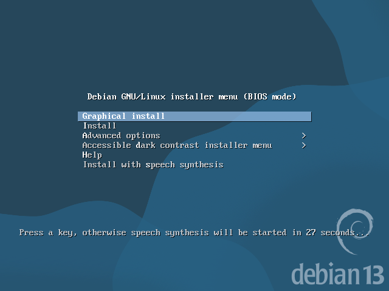
Le menu de l'installateur Debian 13
Valider en moins de 30 secondes
Sur certaines VM, un compte à rebours s'affiche en bas du menu (Press a key, otherwise speech synthesis will be started in 27 seconds) : sans action, l'installateur passe en synthèse vocale, prévue pour les personnes non voyantes. Si cela arrive, redémarrer la VM (VM > Power > Reset) et valider Graphical install plus vite.
4.2 Langue, pays et clavier¶
| Écran | Choix |
|---|---|
| Select a language | French - Français, puis Continue |
| Choix de votre situation géographique | France |
| Configurer le clavier | Français |
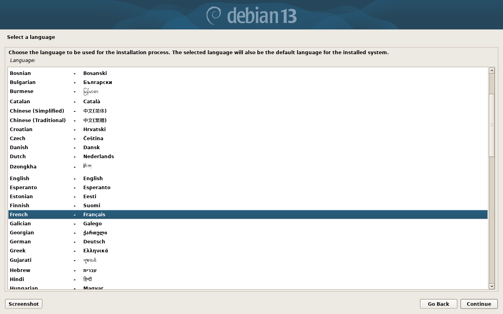
Le choix de la langue sert aussi de langue par défaut au système installé
Dès que la disposition Français est validée, le clavier de la VM est en AZERTY. L'installateur charge ensuite des composants, détecte la carte réseau et configure le réseau automatiquement : sur le réseau NAT de Workstation, le serveur DHCP répond tout de suite et il n'y a aucune question sur le réseau.
Dépannage : « La configuration automatique a échoué »
Si aucun serveur DHCP ne répond (carte réseau de la VM débranchée, services VMware arrêtés…), l'installateur attend une trentaine de secondes puis affiche cet écran :
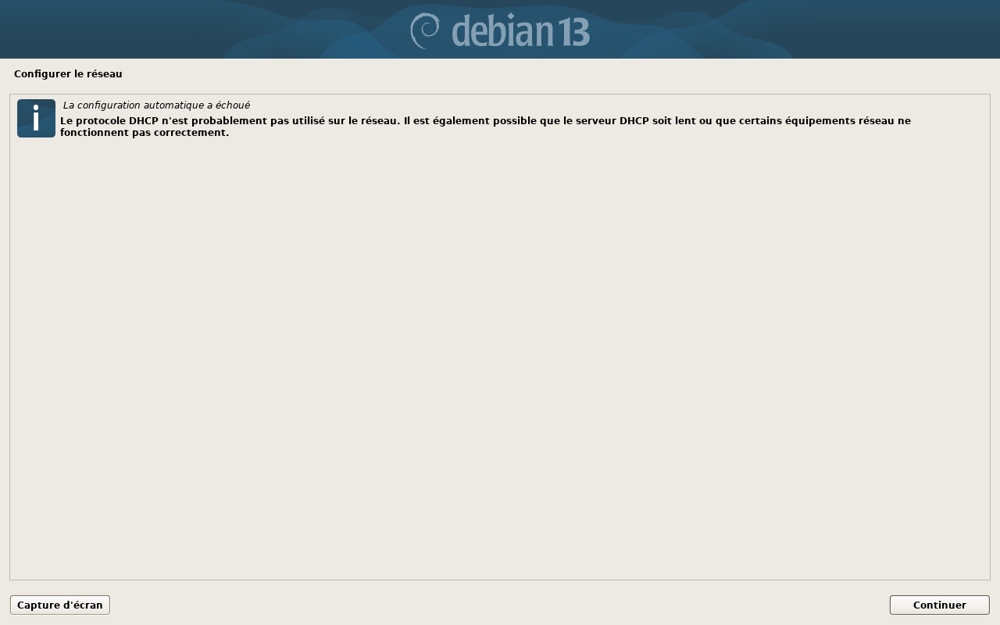
Aucun serveur DHCP n'a répondu
Deux solutions :
- Réparer le DHCP : vérifier dans Workstation que la carte réseau est connectée (VM > Settings > Network Adapter, case Connected) et que les services VMware DHCP Service et VMware NAT Service tournent sur le PC (voir les annexes), puis choisir Réessayer la configuration automatique du réseau.
- Configurer le réseau à la main : choisir Configurer vous-même le réseau, puis saisir une adresse libre du réseau VMnet8 sous la plage DHCP (par exemple
192.168.x.10/24), la passerelle192.168.x.2et le serveur de noms192.168.x.2, oùxest le troisième octet du réseau VMnet8 de son PC.
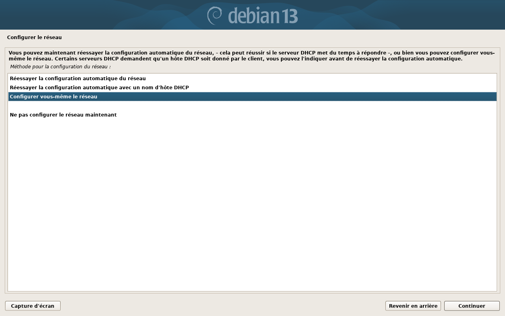
Le choix de la configuration manuelle
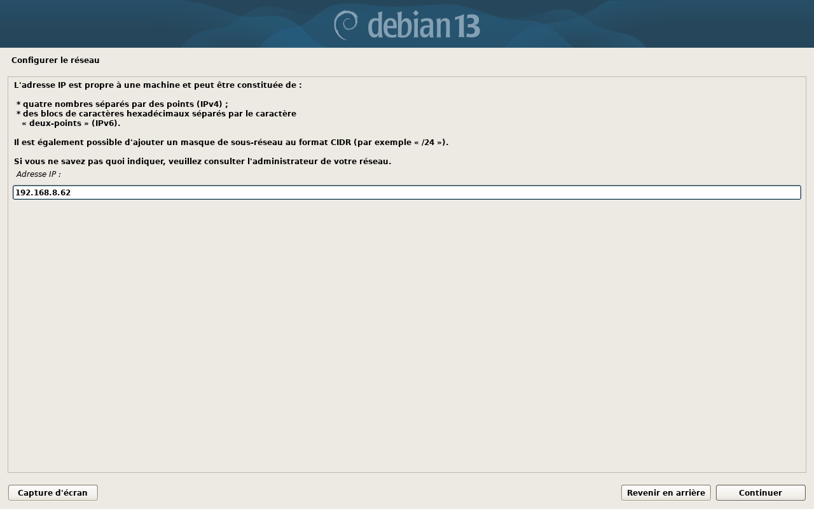
Exemple : ici 192.168.8.62 ; sur son PC, 192.168.x.10/24 (le masque peut être saisi au format CIDR)
4.3 Nom de la machine et comptes¶
| Écran | Champ | Valeur |
|---|---|---|
| Configurer le réseau | Nom de machine | debian-tp (remplacer debian, proposé par défaut) |
| Configurer le réseau | Domaine | laisser vide (si localdomain est proposé, l'effacer ou le garder : c'est sans conséquence pour le TP) |
| Créer les utilisateurs et choisir les mots de passe | Mot de passe du superutilisateur (« root ») et sa confirmation | Virtu2026! |
| idem | Nom complet du nouvel utilisateur | Technicien TSSR |
| idem | Identifiant pour le compte utilisateur | tssr (l'installateur propose technicien : le remplacer) |
| idem | Mot de passe pour le nouvel utilisateur et sa confirmation | Virtu2026! |
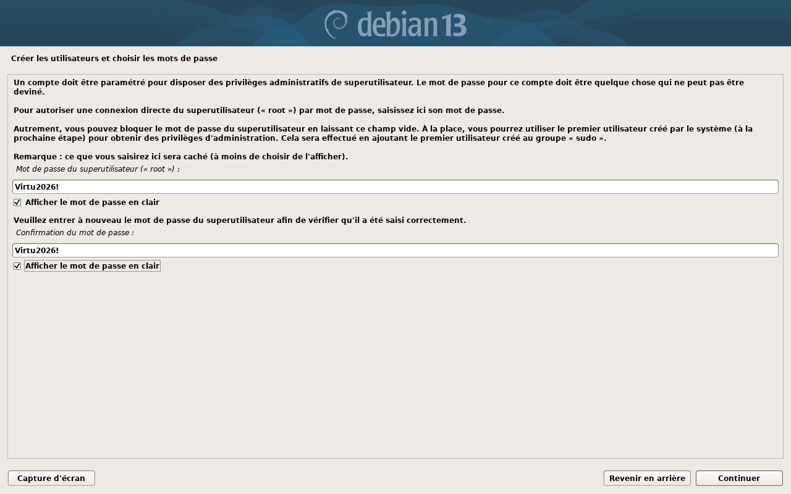
Cocher « Afficher le mot de passe en clair » permet de vérifier la saisie au clavier AZERTY
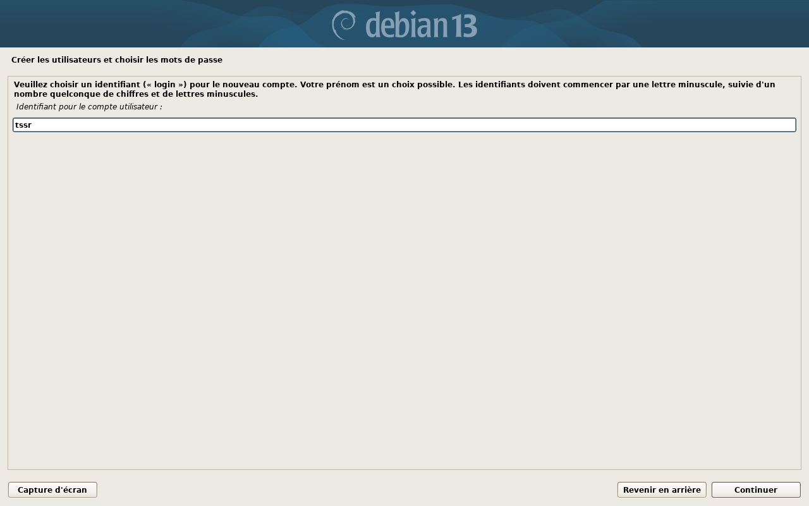
L'installateur propose un identifiant tiré du nom complet : le remplacer par tssr
Pourquoi un compte root ET un compte utilisateur ?
root est le superutilisateur : il a tous les droits, y compris celui de tout casser. On travaille au quotidien avec un compte ordinaire (tssr) et on ne prend les droits d'administrateur que quand c'est nécessaire. Comme un mot de passe root est défini, l'installateur n'installe pas l'outil sudo : on l'ajoutera en section 5. Si l'on laissait le mot de passe root vide, le compte root serait bloqué et tssr recevrait directement les droits sudo : c'est l'autre façon de faire, proposée par l'installateur lui-même.
Il n'y a pas de question sur le fuseau horaire : la France n'en ayant qu'un, l'installateur applique Europe/Paris.
4.4 Partitionner le disque¶
| Écran | Choix |
|---|---|
| Méthode de partitionnement | Assisté - utiliser un disque entier |
| Disque à partitionner | Le seul disque proposé (20 Go, soit « 21.5 GB » en unités décimales) |
| Schéma de partitionnement | Tout dans une seule partition (recommandé pour les débutants) |
| Récapitulatif des partitions | Terminer le partitionnement et appliquer les changements |
| Faut-il appliquer les changements sur les disques ? | Oui (attention : Non est présélectionné) |
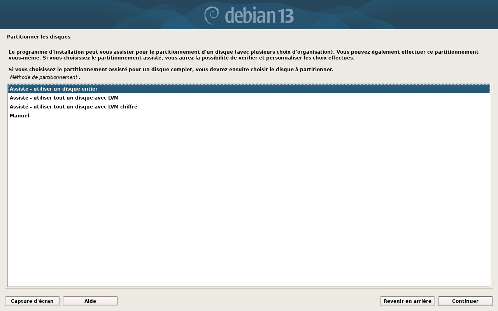
Le partitionnement assisté convient très bien à une VM de TP
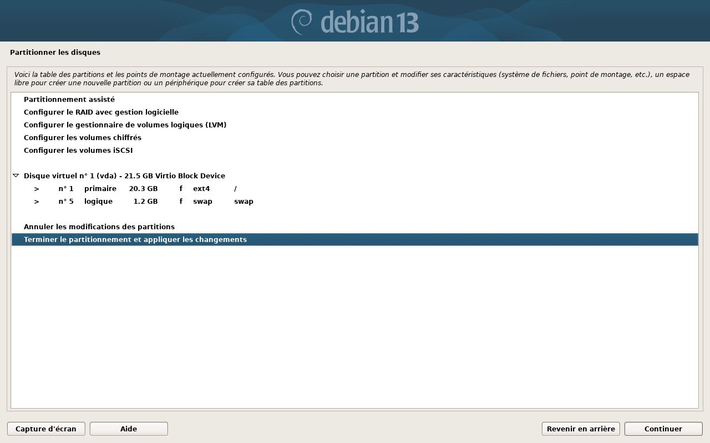
Le schéma proposé : une partition système et une partition d'échange
Le nom du disque dépend de l'hyperviseur
Sur les illustrations, le disque s'appelle vda (« Virtio Block Device »), le nom que Linux donne aux disques paravirtualisés de l'hyperviseur KVM. Dans Workstation, il s'appelle sda (contrôleur SCSI ou SATA) ou nvme0n1 (contrôleur NVMe), avec un libellé qui contient « VMware ». Le principe est le même : un disque virtuel que Linux voit comme un vrai disque.
Pourquoi « 21.5 GB » pour un disque de 20 Go ?
Workstation compte en gibioctets (1 Gio = 1 073 741 824 octets) ; l'installateur Debian affiche des gigaoctets décimaux (1 Go = 1 000 000 000 octets). 20 Gio = 21,47 milliards d'octets, soit « 21.5 GB ». C'est la même raison pour laquelle un disque dur « de 1 To » n'affiche que 931 Gio dans Windows.
L'installateur installe ensuite le système de base (environ 2 minutes).
4.5 Gestionnaire de paquets et logiciels¶
| Écran | Choix |
|---|---|
| Faut-il analyser d'autres supports d'installation ? | Non |
| Pays du miroir de l'archive Debian | France |
| Miroir de l'archive Debian | deb.debian.org |
| Mandataire HTTP | laisser vide (sauf si le réseau de la salle impose un proxy) |
| Souhaitez-vous participer à l'étude statistique sur l'utilisation des paquets ? | Non |
| Sélection des logiciels | Décocher « environnement de bureau Debian » et « … GNOME » ; cocher « serveur SSH » ; garder « utilitaires usuels du système » |
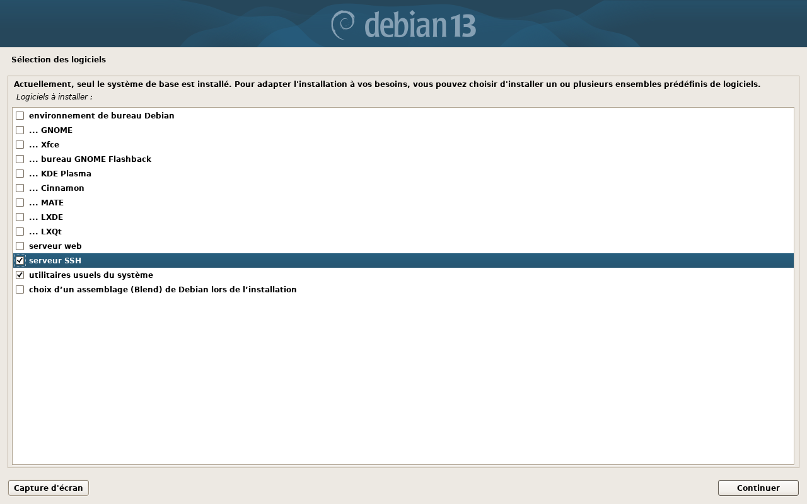
Un serveur n'a pas besoin de bureau graphique : seuls le serveur SSH et les utilitaires sont cochés
Pourquoi pas d'environnement de bureau ?
Un serveur s'administre en ligne de commande, souvent à distance. Sans bureau, Debian occupe environ 2 Go de disque et un peu plus de 200 Mo de mémoire au démarrage ; avec GNOME, il en faudrait plusieurs fois plus. Moins de logiciels, c'est aussi moins de failles à corriger. Le serveur SSH permettra de se connecter à la VM depuis Windows.
4.6 Programme de démarrage et fin de l'installation¶
| Écran | Choix |
|---|---|
| Installer le programme de démarrage GRUB sur le disque principal ? | Oui (selon le micrologiciel de la VM, cette question peut ne pas apparaître) |
| Périphérique où sera installé le programme de démarrage | Le disque de la VM : /dev/sda (ou /dev/nvme0n1), pas « Choix manuel du périphérique », présélectionné |
| Installation terminée | Continuer : la VM redémarre |
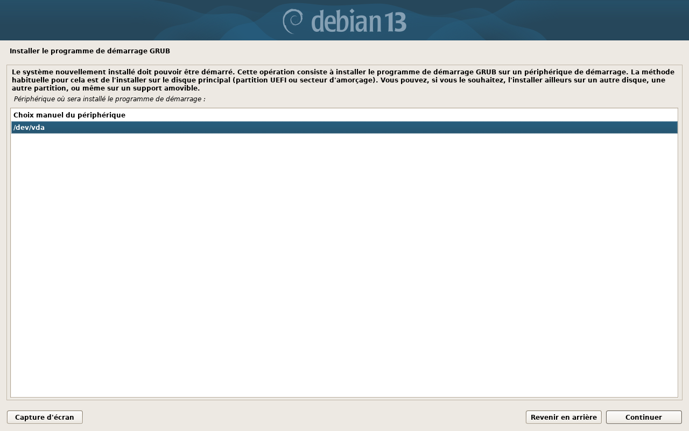
Choisir le disque de la VM, et non « Choix manuel du périphérique »
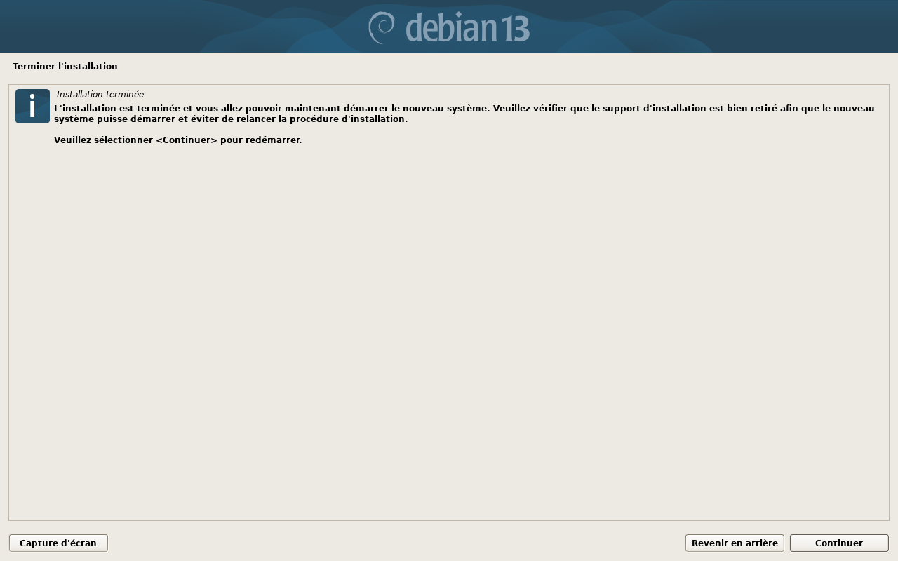
L'installation est terminée
Retirer l'image d'installation
Une fois Debian installé, la VM démarre sur son disque. Pour éviter qu'elle démarre un jour sur l'installateur par erreur, 🖥️ ouvrir VM > Settings, sélectionner le lecteur CD/DVD et décocher Connected et Connect at power on.
Le menu GNU GRUB s'affiche quelques secondes, puis Debian démarre et affiche l'invite de connexion debian-tp login:. Sur un PC récent, l'installation complète prend environ 15 minutes.
5. Premier démarrage, sudo et outils d'intégration¶
5.1 Se connecter et installer sudo¶
- 🐧 Se connecter en
tssr(le mot de passe ne s'affiche pas pendant la saisie, c'est normal). -
🐧 Afficher l'adresse IP de la VM et la noter :
La carte réseau (souvent nommée
ens33) a une adresse en192.168.x.128ou au-dessus, distribuée par le DHCP de Workstation. -
🐧 Devenir
root, installersudo, les outils d'intégration et deux outils d'inventaire du matériel (dmidecode,pciutils, utilisés en section 6), puis donner les droitssudoàtssr: -
🐧 Se déconnecter (
exit) puis se reconnecter entssr: l'appartenance à un nouveau groupe ne compte qu'à la connexion suivante. -
🐧 Vérifier :
Après le mot de passe de
tssr, la réponse estroot.
5.2 Les outils d'intégration open-vm-tools¶
Les VMware Tools sont une suite de pilotes et de services qui améliorent le fonctionnement d'une VM dans un hyperviseur VMware. Sous Windows, ils installent les pilotes paravirtualisés (réseau, disque, affichage, ballon mémoire). Sous Linux, ces pilotes sont déjà dans le noyau ; VMware recommande d'y ajouter open-vm-tools, la version libre des outils fournie par les distributions, qui apporte les services d'intégration : synchronisation de l'heure, arrêt propre depuis Workstation, envoi de l'adresse IP à l'hyperviseur, réduction des disques. C'est le paquet installé à l'étape précédente.
Déjà installé ?
L'installateur Debian installe parfois open-vm-tools tout seul quand il détecte VMware. Dans ce cas, apt répond que le paquet est déjà à la version la plus récente : c'est normal.
🐧 Vérifier que le service tourne :
Vérifier son lab
systemctl is-active open-vm-toolsrépondactive.vmware-toolbox-cmd -vaffiche un numéro de version (12.5 avec Debian 13).- 🖥️ Dans Workstation, l'onglet de la VM (résumé, en bas) affiche maintenant son adresse IP : c'est open-vm-tools qui l'envoie à l'hyperviseur.
- 🐧
ping -c 3 deb.debian.orgrépond : la VM a accès à Internet par le NAT de Workstation.
Astuce : administrer la VM depuis Windows en SSH
Taper des commandes dans la console de Workstation n'est pas très confortable (pas de copier-coller, clavier capturé). Comme le serveur SSH est installé et que le PC a une adresse sur le réseau VMnet8, on peut se connecter depuis PowerShell ou le Terminal Windows :
Répondre yes à la question sur l'empreinte de la machine, puis saisir le mot de passe. Le copier-coller fonctionne alors normalement. C'est ainsi qu'on administre les serveurs Linux en entreprise : à distance, sans écran.
6. Machine physique ou machine virtuelle ?¶
✍️ Enquête, 20 minutes. Un système peut-il savoir qu'il tourne dans une VM ? Pour le découvrir, comparer ce que voient la VM et le PC hôte. Recopier et remplir ce tableau.
| Question | 🐧 Commande dans la VM | Réponse dans la VM | 🖥️ Commande sur le PC (PowerShell) | Réponse sur le PC |
|---|---|---|---|---|
| Suis-je virtualisé ? | systemd-detect-virt |
(Get-CimInstance Win32_ComputerSystem).HypervisorPresent |
||
| Quel est le fabricant de la machine ? | sudo dmidecode -s system-manufacturer |
(Get-CimInstance Win32_ComputerSystem).Manufacturer |
||
| Quel processeur ? | lscpu (lignes Nom de modèle, Fabricant de l'hyperviseur) |
(Get-CimInstance Win32_Processor).Name |
||
| Combien de processeurs ? | nproc |
$env:NUMBER_OF_PROCESSORS |
||
| Combien de mémoire ? | free -h |
Gestionnaire des tâches > Performances > Mémoire | ||
| Quels disques ? | lsblk |
Get-Disk |
||
| Quelles cartes et quels contrôleurs ? | lspci |
Gestionnaire de périphériques |
Corrigé
- Suis-je virtualisé ? Dans la VM,
systemd-detect-virtrépondvmware(il répondraitkvmsous KVM,microsoftsous Hyper-V,oraclesous VirtualBox, etnonesur une machine physique). Sur le PC,HypervisorPresentvautFalse, sauf si l'hyperviseur de Windows est actif (voir la partie 2) : Windows lui-même tourne alors au-dessus d'un hyperviseur ! - Fabricant : dans la VM,
VMware, Inc.: le BIOS virtuel annonce clairement l'hyperviseur. Sur le PC, le vrai constructeur (Dell, HP, Lenovo, ou le fabricant de la carte mère). - Processeur : la VM voit le même modèle de processeur que le PC (l'hyperviseur le lui présente tel quel), mais
lscpuajoute les lignes Fabricant de l'hyperviseur : VMware et Type de virtualisation : complet (Hypervisor vendor, Virtualization type sur un système en anglais). - Nombre de processeurs : la VM n'en voit que 2 (ses vCPU), le PC tous ses processeurs logiques.
- Mémoire : la VM voit un peu moins de 2 Go (environ 1,9 Gio), le noyau en réservant une partie ; le PC voit toute sa mémoire.
- Disques : la VM voit un disque de 20 Go, qui n'est en réalité qu'un fichier
.vmdkde quelques Go sur le disque du PC. - Cartes :
lspciliste des composants dont plusieurs portent le nom VMware (adaptateur graphique SVGA, ponts PCI Express…) et une carte réseau virtuelle.
Conclusion : un système invité peut savoir qu'il est virtualisé, et les logiciels s'en servent (par exemple pour installer automatiquement les bons pilotes, ou pour vérifier une licence). Pour tout le reste, il se comporte exactement comme sur une machine physique.
7. Prendre le premier instantané¶
-
🐧 Éteindre proprement la VM :
-
🛟 🖥️ Une fois la VM éteinte, ouvrir VM > Snapshot > Take Snapshot (VM > Instantané > Prendre un instantané), nommer l'instantané
01-installation-terminee, avec la description « Debian 13 installée, sudo et open-vm-tools », puis Take Snapshot.
Cet instantané permettra de repartir d'une Debian propre à tout moment. La partie 4 explique comment il fonctionne.
Vérifier son lab
- Le dossier
C:\VM\debian-tpcontient maintenant un fichier.vmsnet un nouveau disque différentieldebian-tp-000001.vmdk(ou plusieurs fichiers-000001-s001.vmdk… si le disque est découpé). - VM > Snapshot > Snapshot Manager affiche l'instantané
01-installation-terminee. - Les fichiers
.vmdkd'origine pèsent environ 2 à 3 Go au total, bien moins que les 20 Go annoncés.
8. Questions de révision¶
- Qu'est-ce qu'une image ISO netinst, et pourquoi faut-il un accès à Internet pour l'utiliser ?
- À quoi sert la vérification de l'empreinte SHA256 d'une image téléchargée ?
- Quel fichier contient la configuration d'une VM Workstation ? Et son disque ?
- Pourquoi l'installateur n'installe-t-il pas
sudodans ce TP ? Comment donner les droits d'administration àtssr? - À quoi servent les open-vm-tools ? Citer trois fonctions.
- Citer deux moyens, depuis l'intérieur d'une VM Linux, de savoir qu'elle est virtualisée.
Corrigé
- Une image netinst ne contient que le minimum pour démarrer l'installateur et installer le système de base. Les autres paquets (logiciels choisis, mises à jour) sont téléchargés pendant l'installation depuis un miroir Debian : sans Internet, l'installation reste très limitée.
- Elle prouve que le fichier téléchargé est identique à celui publié par Debian : il n'est ni abîmé ni modifié par un tiers. Une seule différence d'octet donnerait une empreinte complètement différente.
- La configuration est dans le fichier texte
.vmx; le disque est le ou les fichiers.vmdk. - Parce qu'un mot de passe root a été défini : l'installateur considère qu'on administrera avec
root. On installesudoen tant que root (su -, puisapt install sudo) et on ajoutetssrau groupesudo(usermod -aG sudo tssr), puis on se reconnecte. - Pilotes paravirtualisés (réseau, disque, affichage), ballon mémoire, synchronisation de l'heure avec l'hôte, arrêt et redémarrage propres depuis l'hyperviseur, envoi de l'adresse IP et de l'état de la VM à l'hyperviseur, réduction des disques.
systemd-detect-virt(répondvmware),lscpu(ligne Fabricant de l'hyperviseur),sudo dmidecode -s system-manufacturer(VMware, Inc.), oulspci(composants au nom de VMware).
Ressources¶
- Debian — installation par le réseau — télécharger l'image netinst.
- Guide d'installation de Debian 13 (amd64) — le manuel officiel de l'installateur, en français.
- Broadcom — Fichiers d'une machine virtuelle (Workstation 26H1) — le rôle de chaque fichier d'une VM (en anglais).
- Broadcom — Prise en charge d'open-vm-tools — pourquoi VMware recommande open-vm-tools pour les invités Linux (en anglais).
- Partie précédente : Hyperviseur et machine virtuelle · Partie suivante : Partager les ressources.